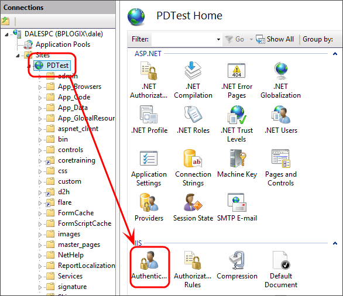
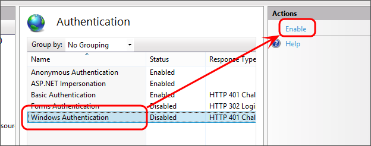
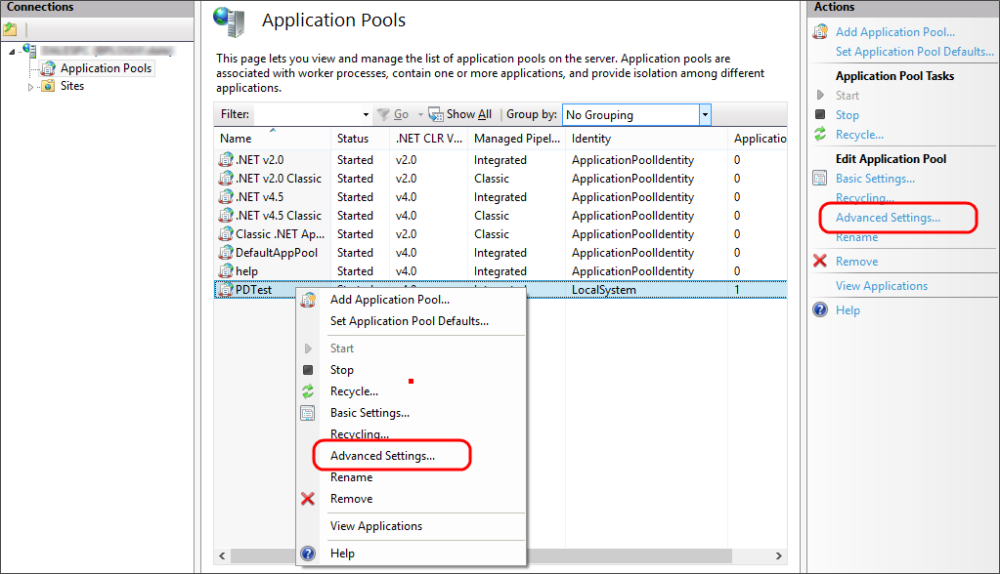
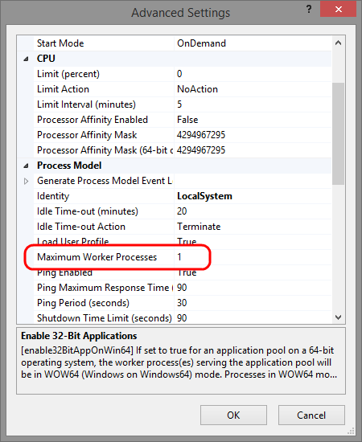

On completion of the installation procedure, the Process Director will have added several items to the Windows program group. Unless you change the directory during the installation, the Process Director will be installed in the C:\Program Files\BP Logix\Process Director\ directory. The following components are also installed or configured as part of the installation program:
Process Director accepts Windows Authentication using NTLM. The default configuration for Internet Information Services (IIS 7) is to enable anonymous authentication only, however, so you'll need to configure IIS to use NTLM by using the following procedure.
Open the IIS Manager and select the Process Director Web site from the tree view on the left side of the screen. Once you have done so, double click on the Authentication icon.

On the Authentication page, select Windows Authentication, then click Enable in the actions pane to use Windows authentication.

Occasionally, server administrators will configure Internet Information Server to run as a web garden. By default, an IIS application pool will run in a single process on the server. Servers configured as a web garden allow an IIS application pool to run on multiple processes, usually as part of a load balancing scheme. When this is done, w3wp.exe, will serve requests made to that single application pool by distributing the requests to multiple processes. Setting up a web garden is accomplished by setting the Maximum Worker Processes property of the application pool to allow 2 or more process to run under the application pool.
This configuration is not supported by Process Director, as it is not possible to synchronize the processes, causing the application to lose the current state of Process Director objects. You should ensure that the application pool for the Process Director Installation is configured to set the Maximum Worker Processes property to "1". To check this setting, Open the IIS Manager and click the Application Pools item in the treeview on the left side of the window. From the application pools list, open the Advanced Settings of the application pool of the process Director installation.

In the Advanced Settings dialog box, ensure that the Maximum Worker Processes setting is set to "1".
